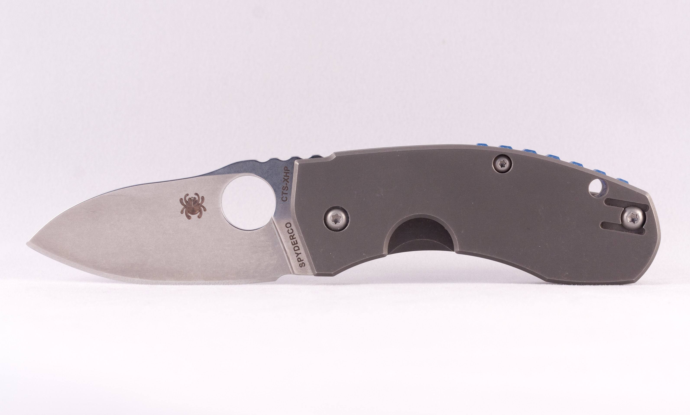
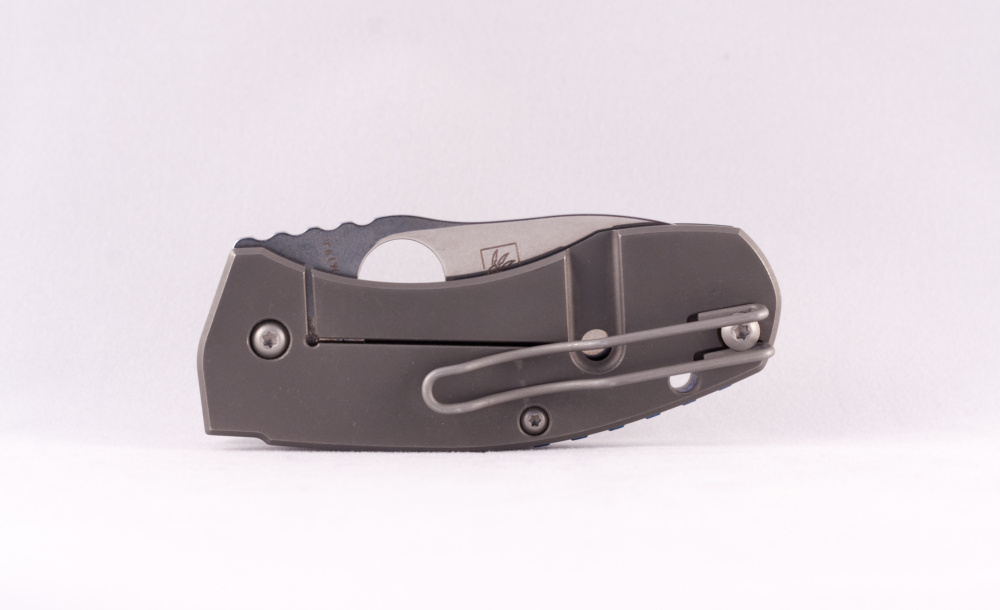

Spyderco Techno


Polish knifemaker Marcin Slysz marks his Techno folder with a progressive European appearance. The Techno falls into Spyderco’s “Little Big Knives” category; meaning it has a smaller blade and handle, paired with a hard-duty locking mechanism, exotic blade steel and vault-like construction found primarily on hard-use, larger knives. Spyderco’s first collaboration with Mr. Slysz, the Techno is also the first main-line production Spyderco CLIPIT to use Carpenter’s Steel CTS-XHP.
- Designer: Marcin Slysz
- Mechanism: Framelock
- Action: Manual-opening
- Blade Length: 2.55" (6.5cm)
- Blade Thickness: 0.177" (4.5mm)
- Open Length: 5.98" (15.2cm)
- Closed Length: 3.43" (8.7cm)
- Titanium Handles
- Blade Steel: CTS-XHP (59-60 HRC)
- Weight: 3.6oz (102g)
Product ID: techno
*Information courtesy of Spyderco.